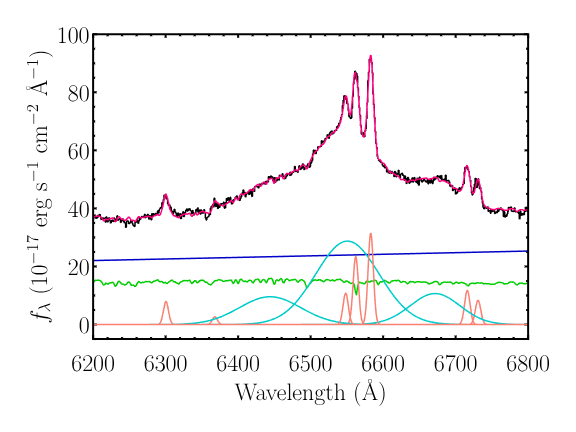

🔭 My Research
🌌 Wide Binaries & Modified Gravity (MOND)
At Ohio State, I'm working on wide binary stars as precision tools to test gravitational physics in the low-acceleration regime. My current research explores how their orbital dynamics can be used to probe deviations from Newtonian gravity under the framework Modified Newtonian Dynamics (MOND). I'm using Gaia astrometry with high-resolution spectroscopic radial velocity data from Keck, VLT, Magellan, and LBT telescopes.
I'll update my progress on this project soon.
🌟 Young Stars & Stellar Formation

-
ABYSS II: Identifying Young Stars in Optical SDSS Spectra
In this project I developed a full data pipeline to detect and characterize young stellar objects (YSOs) in SDSS-BOSS spectra, measuring veiling and accretion properties. The work is published in The Astronomical Journal. -
Empirical Veiling Measurements in BOSS Spectra
I also built an empirical calibration for stellar veiling in optical spectra which validates accretion diagnostics for hundreds of YSOs. The work is also published in The Astronomical Journal and presented at multiple conferences.
🌀 Active Galactic Nuclei & Black Hole Binaries

-
Tick Tock: Spectroscopic Analysis of J1430
I investigated periodic optical variability in the quasar J1430+2303 using UV-optical spectra from the Hubble Space Telescope and ground-based facilities. My final analysis proposed an alternative explanation to the supermassive black hole binary hypothesis - manuscript subitted for publication. -
J0950+5128: Perturbed Accretion Disk Dynamics
I also participated in a project to perform line-profile decomposition and disk modeling to understand deviations from standard AGN accretion behavior of various AGNs. This work to constrain disk kinematics and binary-induced perturbations in supermassive black hole accretion disk.

Image credit: NASA